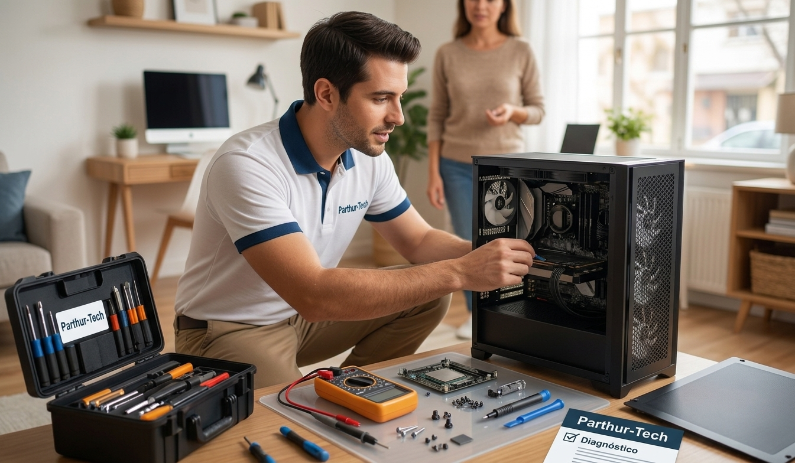

Nuestros servicios
Reparación
Revisamos fuente de poder, memoria RAM, disco duro y placa madre para
encontrar la falla real antes de cobrar nada. Si el equipo no enciende o
se queda en pantalla negra, este es el punto de partida.
Visita y diagnóstico: $15.000 (se abona al trabajo si se contrata)
Mantención

Un equipo lento o que se calienta de más casi siempre es polvo
acumulado y pasta térmica seca. Desarmamos, limpiamos el disipador y
los ventiladores, y cambiamos la pasta térmica y los thermal pads.
Limpieza y pasta térmica: $30.000
Restauración de sistema operativo
Antes de formatear, resguardamos tus archivos y tú los confirmas con
tus propios ojos. Recién ahí instalamos Windows limpio con los drivers
correctos, actualizaciones y programas base.
Reinstalación de sistema operativo: $30.000
Instalación de software
Instalamos y configuramos Office sobre tu propia licencia, además de
los programas que necesites para trabajar o estudiar.
Instalación de software: $15.000